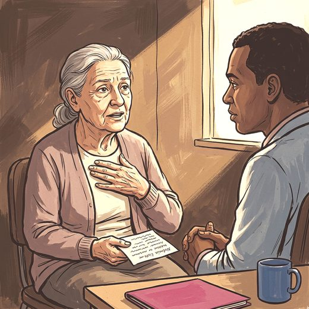

Consulta rápida à beira do leito
Condutas, doses e interações.
Referências da aula · 7
- Cruz PP, Sousa RAL, Felício LFF, Monteiro-Junior RS, Cassilhas RC. Association between lower limb strength, anxiety, and depression symptoms in older adults. Rev Assoc Med Bras. 2026;72(7):e20260070. doi:10.1590/1806-9282.20260070.DOI
- American Psychiatric Association. Diagnostic and Statistical Manual of Mental Disorders, Fifth Edition, Text Revision (DSM-5-TR). Washington, DC: APA; 2022.
- Craske MG, Stein MB. Anxiety. Lancet. 2016;388(10063):3048-59. PMID 27349358. doi:10.1016/S0140-6736(16)30381-6.PubMedDOI
- Wolitzky-Taylor KB, Castriotta N, Lenze EJ, Stanley MA, Craske MG. Anxiety disorders in older adults: a comprehensive review. Depress Anxiety. 2010;27(2):190-211. PMID 20099273. doi:10.1002/da.20653.PubMedDOI
- Becker E, Orellana Rios CL, Lahmann C, Rücker G, Bauer J, Boeker M. Anxiety as a risk factor of Alzheimer's disease and vascular dementia. Br J Psychiatry. 2018;213(5):654-60. PMID 30339108. doi:10.1192/bjp.2018.173.PubMedDOI
- Gimson A, Schlosser M, Huntley JD, Marchant NL. Support for midlife anxiety diagnosis as an independent risk factor for dementia: a systematic review. BMJ Open. 2018;8(4):e019399. PMID 29712690. doi:10.1136/bmjopen-2017-019399.PubMedDOI
- Montero-Odasso M, van der Velde N, Martin FC, et al. World guidelines for falls prevention and management for older adults: a global initiative. Age Ageing. 2022;51(9):afac205. PMID 36178003. doi:10.1093/ageing/afac205.PubMedDOI
Documentos oficiais
Leis e publicações do Ministério da Saúde sobre o cuidado da pessoa idosa, de acesso livre.
Abrir os documentos